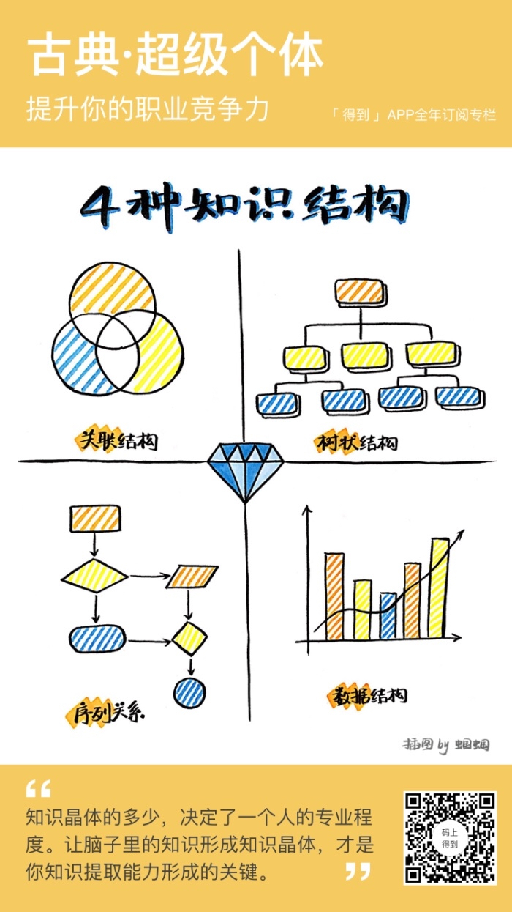

知识晶体
Table of Contents
- link
- Learning
1. 知识晶体
【费曼法总结】
知识晶体描述的是一种知识存放和提取的方法.
在日常生活中, 你是不是经常会出现这样的状况? 看过的书根本不记得, 记得的知识根本讲不出来, 说出来也讲不清楚, 如果你出现这些状况, 那可能是你的知识存放提取方式出现了问题.
当知识在大脑中只有一个个孤立的知识点, 不能产生联系的时候, 他们就很容易被遗忘. 星座就是个最好的例子. 当星星在空中分布排列, 你很难记住他们每一个的名字和位置, 然而一旦把它们连城星座, 并赋予一些情感上的含义, 就变得十分容易传播和记忆了. 知识也是同样, 当知识在我们脑子形成结构和联系, 他们也变得更加容易提取和记忆.
1.1. 💕那么, 知识有哪几种结构呢?
1.1.1. 1. 树状结构
也就是目录结构, 体现层级, 包含关系, 一本书的目录, 思维导图都是树状结构, 它也被MIT研究证明是人类抽象知识的最佳结构.
1.1.2. 2. 关联结构
表明了知识之间的关联关系, 集合当中的韦恩图, 金字塔结构都是典型的关联结构.
1.1.3. 3. 流程结构
表明了事件的先后顺序和因果关系, 流程图就是典型的流程结构.
1.1.4. 4. 数据结构
表明数量之间的差异关系, 统计学当中的图表大多属于此类结构.
1.2. 💕知道了这些结构, 我们又该如何将自己的知识形成这些结构呢? 有如下三种方法: ATTACH
- 大量学习各种已经总结出来的结构, 如SMART原则, STAR法则等等, 试着用这些框架来解释自己现有的知识.
- 自己画思维导图, 关系图等, 试着用图表来描述知识.
- 假装自己在写一本书, 将知识形成目录结构.
